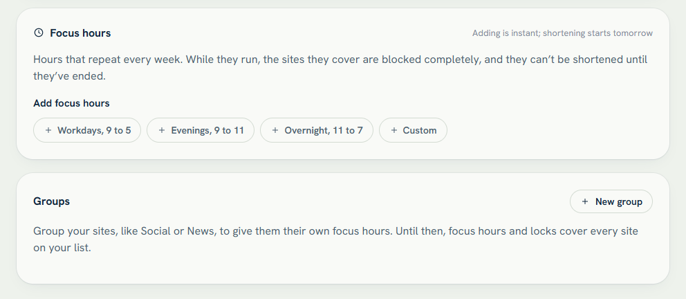

Focus is for times when your sites shouldn’t open at all: no challenge, no free minutes, no passes. Focus hours repeat every week; a focus lock is one stretch you start by hand. Both live on the Focus page of the dashboard.
What happens during focus time
- The sites it covers are blocked completely. The gate says the site is blocked for now and when that ends; after that, it opens with a challenge as usual.
- Time you’d already earned on a covered site ends when focus starts.
- A covered site can’t be switched off or unblocked until focus is over.
- Focus covers the switched-on sites on your list, or only the groups you choose (see Groups below).
Focus hours
- Click QuizBlock in the toolbar, then Open dashboard, and go to Focus.
- Under Add focus hours, pick Workdays, 9 to 5, Evenings, 9 to 11, Overnight, 11 to 7 or Custom.
- Click the new entry to change its Name, Days and Hours, in 15-minute steps. If the end comes before the start, they run overnight and end the next morning.
- If you’ve made groups, choose Which sites: All sites, or one or more groups.
Each entry has a switch to turn it on or off, and Delete these focus hours when you open it. While they run, the entry shows “On now” and when they end.

Changing focus hours
As the page puts it: adding is instant; shortening starts tomorrow.
- Anything that covers more applies at once: new hours, longer hours, more days, more sites.
- Anything that covers less starts tomorrow: shorter hours, fewer days, switching an entry off or deleting it. Until then the current hours hold, and the page shows “Shorter focus hours start tomorrow.” Keep the current hours cancels the change.
- While any focus hours are running, or during a focus lock, they can only be added to. A change that covers less isn’t accepted until they end, not even for tomorrow.
Focus locks
A focus lock closes your sites for one stretch, starting now. Once it’s on, it can’t be ended early or shortened.
- On the Focus page, under Focus lock, choose Block my sites, Only allow some sites or Pomodoro.
- Under For how long, pick 25 min, 1 hour, 2 hours or 4 hours, or Until… and a time. For Pomodoro, set the rounds instead (see below).
- If you’ve made groups, choose Which sites.
- Click Lock until (it shows the end time), then Start the lock to confirm, or Not now.
For a quick one, the toolbar popup has Focus lock buttons for 25 min, 1 h and 2 h. They lock every site on your list once you click Lock.
Pick the length with care: a lock can be made longer but never shorter. While it runs, the Focus page offers Make it longer by 15 min, 30 min or 1 hour, and a lock can run for 24 hours at most.
While a lock runs, you can still tighten your rules. Changes that would relax them, such as a gentler setting, more free minutes, an easier level, a higher daily limit or shorter focus hours, aren’t accepted, not even for tomorrow. The quiz for switching a site off, removing it or unblocking it isn’t available until the lock ends.
Only allow some sites
Add the sites you need under Sites that stay open: type an address and click Allow. Until the lock ends, everything else on the web is blocked, including sites that aren’t on your list. The gate shows which sites are open. A site from your list that you allow still asks for its challenge as usual.
Pomodoro
Choose a Focus round of 25 or 50 min, a Break of 5 or 10 min, and 2, 3, 4 or 6 Rounds. During focus rounds the sites are blocked; during breaks, challenges work as usual. The lock ends with the last focus round, and the Focus page shows which round you’re in.
Keeping the extensions page closed
When you start a lock, you can also switch on Keep the extensions page closed during the lock. Until the lock ends, QuizBlock closes Chrome’s extensions page if it’s opened and shows the Focus page instead. Chrome first asks you to let QuizBlock see your tabs, which it lists as “Read your browsing history”. QuizBlock only looks for that one page, and only while a lock runs. If you don’t allow it, you can start the lock without it.
Groups
Without groups, focus hours and locks cover every site on your list. Groups let each one cover just some of them: work hours for social sites, say, and evenings for news.
- On the Focus page, under Groups, click New group.
- Give it a name, then click the sites that belong in it. Only switched-on sites are listed.
- In focus hours or a new lock, pick the group under Which sites.
Adding a site to a group is instant. Taking one out of a group that focus hours use starts tomorrow, like shortening them.
On your other computers
Focus hours and groups are part of your settings, so with sync on they follow your Chrome profile to your other computers. A focus lock applies to the browser you started it in. See backup and sync, and change your rules for the rest of your settings.